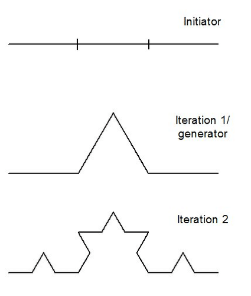
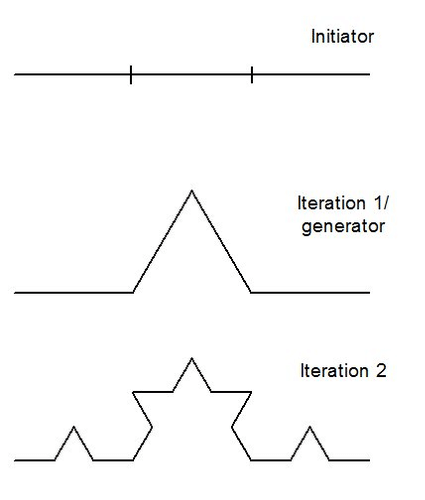

I sistemi di Lindenmayer, o sistemi-L, sono un tipo particolare di grammatica formale sviluppata nel 1968 dal biologo ungherese Aristid Lindenmayer, con l'intento di visualizzare formalmente i processi di crescita e sviluppo degli organismi multicellulari, in particolare vegetali.
I sistemi-L si caratterizzano per la loro natura parallela: in ogni passaggio, tutte le lettere (o simboli) di una stringa vengono riscritte contemporaneamente secondo un insieme di regole di produzione.
Questo approccio riflette la realtà biologica in cui, durante la crescita di un organismo, molte cellule si dividono simultaneamente.
ESEMPI CLASSICI
Albero Frattale: Mostra un sistema di Lindenmayer utilizzato per generare un albero frattale attraverso scrittura ricorsiva e interpretazione grafica con la turtle geometry.
Definizione del sistema:
- Variabili: 0, 1
- Assioma (inizio): 0
- Regole di produzione:
- 1 → 11
- 0 → 1[0]0
Evoluzione della stringa:
- 0 (assioma)
- → 1[0]0 (1ª ricorsione)
- → 11[1[0]0]1[0]0 (2ª ricorsione)
- → 1111[11[1[0]0]1[0]0]11[1[0]0]1[0]0 (3ª ricorsione)
Ad ogni passo, la stringa cresce esponenzialmente in complessità, sviluppando una struttura ramificata.


Crescita Alga: Uno dei primi esempi proposti da Lindenmayer riguarda la simulazione della crescita di un'alga filamentosa.
Regole di riscrittura:
- A → AB
- B → A
Evoluzione della stringa:
- A (assioma)
- → AB (1ª ricorsione)
- → ABA (2ª ricorsione)
- → ABAAB (3ª ricorsione)
- → ABAABABA (4ª ricorsione)
Partendo dal simbolo iniziale A, il sistema genera una sequenza che si sviluppa in modo esponenziale a ogni iterazione, riflettendo la crescita progressiva e ramificata dell'organismo.
 
